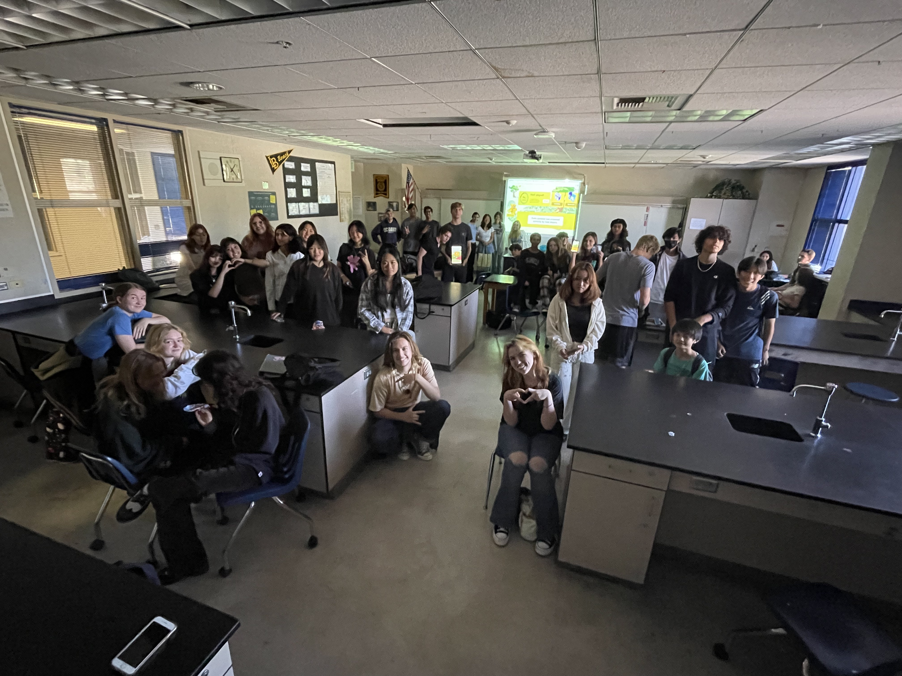

Natalie Trinh
Hi my name is Natalie Trinh. The purpose of my website is to help others navigate the complexities of technology as well as provide information about myself as a college student.
Transitioning from high school to college has marked a trivial point in my personal and professional growth. Countless extracurricular activities pushed me out of my comfort zone to improve my communication and problem solving skills. Some of these organizations include Key Club, National Honors Society, and most importantly, International Baccalaureate Program. As a member of the International Baccalaureate (IB) Program, I took on the role of being the activities coordinator by leading social events and creating a well-rounded community for my peers. I also created my own clubs such as the Upcycling Club and IB Buddies to establish my legacy at my local high school. The Upcycling Club promotes ways to recycle old clothes and educate others to reduce purchasing. I led workshops to reduce fast fashion, reuse old fabrics, and recreate used materials into something new. We collaborated with other clubs to make portable games such as tic-tac-toe mats as well as pet tug toys to donate to local hospitals and foundations. I formed IB Buddies to promote friendships among students within the program. Other IB students and I brainstormed group exercises to increase unity and creative productivity beyond the classroom. Pizza parties and competitive games brought people together to create lasting friendships. Through these activities, I was able to flourish and create the foundation I needed to broaden my horizons in college.
e
As a college freshman, I have embarked on a journey to expand my repertoire and skills with hopes of applying them to future work endeavors. The University of California Riverside has introduced to me the power of networking, teamwork, and further inspiring me to fuel my passion for learning. I am currently majoring in Pre-Business with the hopes of solidifying my place in the School of Business and choosing a concentration in Information Systems. Attending this university for no more than three months has already made an impact as I have gained valuable knowledge from my peers and professors to hone my skills. As of now, I am involved in Design@UCR, a hip hop dance team named Collective Faction, Highlander Business Society, and Vietnamese Student Association. Specifically, Design@UCR and Highlander Business Society has propelled me to think more about any potential careers in the world of business and technology.
Experience
Social Activities Coordinator
• Planned team-bonding meetings for students
• Ran IB Program's Instagram
• Spokesperson for the 2023 graduating class
Club President
• Responsible for leading creative projects
• Lead sustainability workshops
Marketing Intern
• Ran sessions to help students learn how to use Figma
• Create posts for Design@UCR Instagram
• Shadow current board club members
• Preparing for Designathon next quarter
Education
Trabuco Hills High School
University of California Riverside
Portfolio
